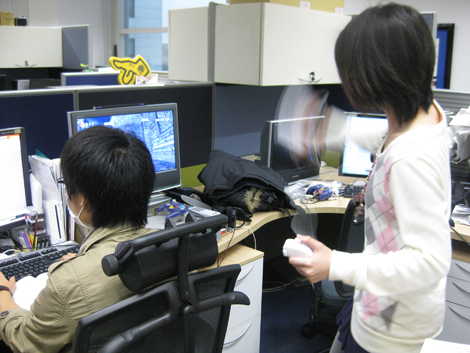

『本日発売☆ 暗黒の騎士チームからハミだし！』
2009年03月12日
こんにちは！ マツバラです！
皆さま！
本日は何の日だか、もちろんご存知ですね？
本日3月12日は！
『ソニックと暗黒の騎士』の発売日です！！
わーわーわー！！
キャッチコピーは「ソニックよ、剣をとれ」！
なんと中世ヨーロッパ風の剣と鎧のファンタジー世界が舞台の、
ちょっと異色な「ソニック」です！
今日は『暗黒の騎士』一色でお届けしようと
鉄兜を装備しています！
どうですか？ 似合いますか？
こんにちは、ヨシノです。
『ソニックと暗黒の騎士』発売を記念して、
私も兜装備で……
…………
よ、ヨシノ！
それ、色々間違ってると思うんだけど！
デザインが若干モダンすぎたかな？
そういう問題じゃない！
アッハッハッハ。
とはいえ……
同じ部署とはいえ、開発チームが違うから
『暗黒の騎士』で遊んだことないよね、私たち。
そういえば、そうだね。
剣戟アクションだってことは知ってるけど……
よし。
早速『暗黒の騎士』チームに押しかけて
取材という名目で遊んでこよう。
そ、そんなストレートな！
『暗黒の騎士』で遊びたくないの？
…………
遊びたいです☆
素直が一番。
よし、行くぞー、おー。
おー！！
というわけで、『ソニックと暗黒の騎士』チームの
フレッシュ1年目企画、小野君の席にやって参りました！
小野君、早くあそばせてー。
わくわく。
小野 ： はじめまして！ 企画の小野です。
無事『ソニックと暗黒の騎士』発売となりました。
皆さまには、是非、
従来のハイスピードアクションに剣戟アクションを加えた
新しい「ソニック」を体験して頂きたく……
いいから、
早く遊ばせろ。
Wiiとソフト、どこ！？
こっちは早く
剣戟ソニックきゅんで遊びたくてジリジリしてるのよ！
小野 ： ……い、いま電源入れます(涙)
わーい♪
それにしても、ゲーム画面のデザインがカッコいーい！
中世風の物語の雰囲気がすごく出てるね。
小野 ： アーサー王伝説がモチーフです。
「騎士」っていうのがキーワードですね。
デザインももちろん、ゲームシステムにも「騎士」道が取り入れられてますよ。
おお。それは期待。
では早速、私から遊ぶ。
ああっ、ずるーい！
ふむふむ。今回は自走じゃないんだね。
連続で敵が倒せると、すっごく気持ちいい。
スピーディーに走りながら
剣アクションも……って、
どんな風になるか想像つかなかったけど、スムーズだね！
うん。
上手くすれば立ち止まらずに次々と敵を斬り捨てられる。
小野 ： 必殺技もありますよ。
キャラクターごとに違うんです。
お。
じゃあ、噂の黒いハリネズミ騎士や、
赤いハリモグラ騎士をやってみたい。
ずるーい！
私も、私もやりたーい！
まだ、私がやる！
そして、1時間後……
はっ！ てやー！たー！
……よし、クリア！
はー、それにしても
ランスロットの必殺技が
カッコよすぎる～☆
小野 ： あの、先輩……
さくさく進むから、
やめ時がわかんないね、これ。
小野 ： 僕、仕事の続きがあるんですけど……
きゃー！
やったー、5つ星ー！
よーし、次！
小野 ： (……仕事しよう……)

取材を忘れて熱中するマツバラと
マツバラを追い出すのを諦めて仕事を始めた小野。
ちょっと、見てヨシノ！
今のアクション、
カッコよく決まったでしょ！？
えーと。
マツバラがWiiリモコンを手放さなくなってしまったので
最後に一言、宣伝をば。
超高速騎士道アクションゲーム
『ソニックと暗黒の騎士』
本日発売でございます。
初心者のヨシノでも遊びやすく、
上手なマツバラがやりこめる奥の深さも充分な
気持ち良いアクションゲームです。
詳細は以下に。
超高速騎士道アクション 『ソニックと暗黒の騎士』
本日発売！
詳しくはこちらのサイトをご覧下さい。
日時: 2009年03月12日 14:00 | パーマリンク


 ソニックを愛する、元気な『SWA』2年目プランナー。
ソニックを愛する、元気な『SWA』2年目プランナー。 マイペースな『SWA』2年目プランナー。
マイペースな『SWA』2年目プランナー。
 ご意見・ご要望はこちら
ご意見・ご要望はこちら RSS
RSS